library(tidyverse)
library(mgcv)
library(brms)
library(itsadug)
library(tidybayes)
library(modelr)
library(patchwork)12 Bayesian GAMs
This lab was written by Márton Sóskuthy then edited and material added by Morgan Sonderegger.
There is no comprehensive reading we know of for Bayesian GA(M)Ms, but some assigned and optional readings for LING 683 were:
- Section 10b of Michael Franke’s Bayesian Regression: Theory and Practice
- T.J. Mahr’s tutorial, “Random effects and penalized splines are the same thing”
- Wood (2017) Sec. 4.2.4, 5.8, and references therein—mathematical background1
Topics:
- Bayesian Generalized Additive Models
13 Preliminaries
Load libraries we’ll need, all familiar from Chapter 10 and Chapter 11 on GA(M)Ms.
Import the pm_young subset of the price_bin data, used in Chapter 11:
pm_young <- readRDS(file = url("https://osf.io/download/xw7va/"))Today we will mostly analyze today from just one participant, whose data is stored in s43:
s43 <- pm_young %>%
filter(speaker=="s-43") %>%
group_by(id) %>%
mutate(traj_start = measurement_no == min(measurement_no)) %>%
ungroup()We restrict to a single speaker because Bayesian GAMs take a long time to fit.
Our research question will be the same as in Sec. 3 of Week 6: is F1 different between PRICE and MOUTH?
Empirical plot for this speaker:
Code
rutgers_theme <- theme_minimal() +
theme(panel.grid = element_blank(),
axis.line = element_line(size=0.8),
axis.ticks = element_line(size=0.8),
axis.text = element_text(size=14, colour="black"),
axis.title = element_text(size=16, face="bold"))
## Warning: The `size` argument of `element_line()` is deprecated as of ggplot2 3.4.0.
## ℹ Please use the `linewidth` argument instead.
ggplot(s43, aes(x=measurement_no, y=f1, col=vowel)) +
geom_line(aes(group=id), alpha=0.05) +
geom_smooth() +
xlab("% vowel duration") +
ylab("F1 (Hz)") +
scale_colour_manual(values=c("orange","purple")) +
scale_x_continuous(breaks=seq(20,80,30),
labels=paste0(seq(20,80,30), "%")) +
rutgers_theme +
theme(axis.text.x=element_text(size=14,angle=60, hjust=1),
panel.grid.major.y=element_line(size=0.1, colour="grey"))
## `geom_smooth()` using method = 'gam' and formula = 'y ~ s(x, bs = "cs")'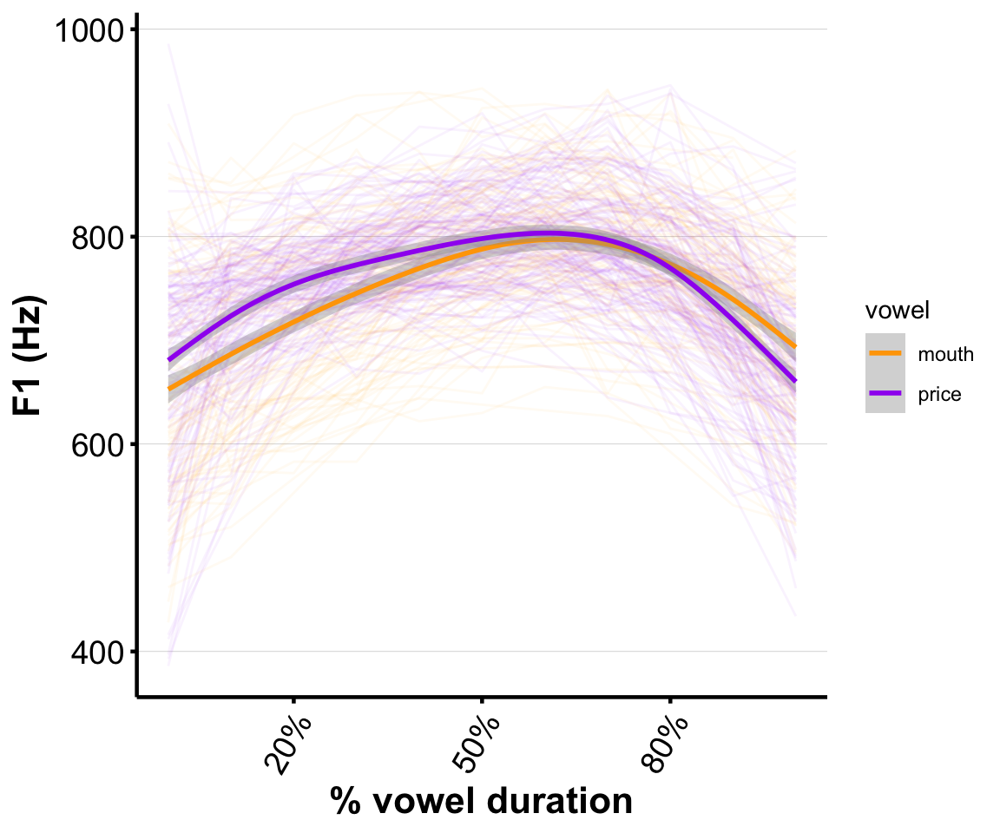
14 Bayesian GAMs
14.1 Motivation
It is worth first thinking through: why would we want to fit a Bayesian GAM to this kind of data? As we’ll see, Bayesian GAMs take much longer to fit and require more knoweldge than regular GAMs. What are the potential benefits?
Exercise 14.1 Group discussion of this point. (don’t peek at the commented out text!)
14.2 Smooth terms in brms
A nice aspect of brms is that its model specification syntax is familiar from other functions: basic regression model syntax is the same as lm(), random effects are specified similarly to g/lmer(), and smooth terms are specified similarly to gam() or bam().
For example, consider a single vowel (PRICE) from speaker S43:
## subset to just the PRICE data (discarding vowel = MOUTH):
s43_price <- s43 %>% filter(vowel=="price")To fit a frequentist GAM for this data (not accounting for grouping by vowel token, for now):
# frequentist gam
s43_price_gam <- bam(f1 ~ s(measurement_no, bs="cr", k=11),
data=s43_price)Fit the equivalent Bayesian GAM (this will take longer):
s43_price_m1 <- brm(f1 ~ s(measurement_no, bs="cr", k=11),
control=list(adapt_delta=0.99),
iter = 2500,
data=s43_price, chains = 4, cores = 4, file = 'models/s43_price_m1.brm')(I had to play with the iter and adapt_delta: if you use the default brm() settings, you’ll get divergent transitions.)
The Bayesian GAM takes longer to fit: a minute or two, versus instantaneous.
Fitted F1 time trajectory for the two models, bam() (left) and brm() (right):
Code
plot_smooth(s43_price_gam, view="measurement_no")
## Summary:
## * measurement_no : numeric predictor; with 30 values ranging from 0.000000 to 100.000000.
## * NOTE : No random effects in the model to cancel.
##
conditional_effects(s43_price_m1) %>%
plot()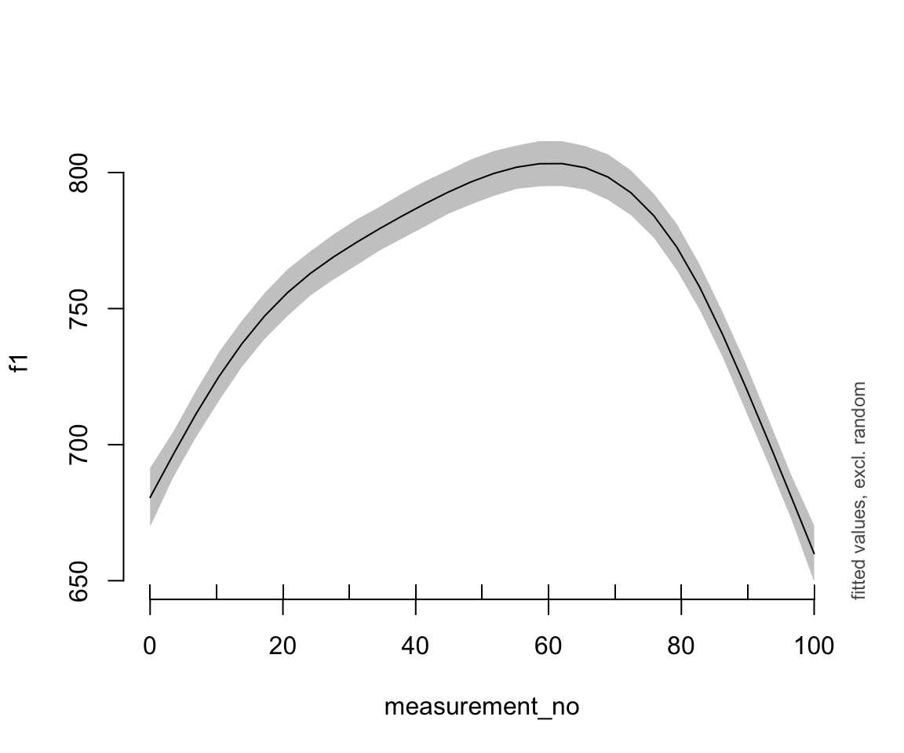
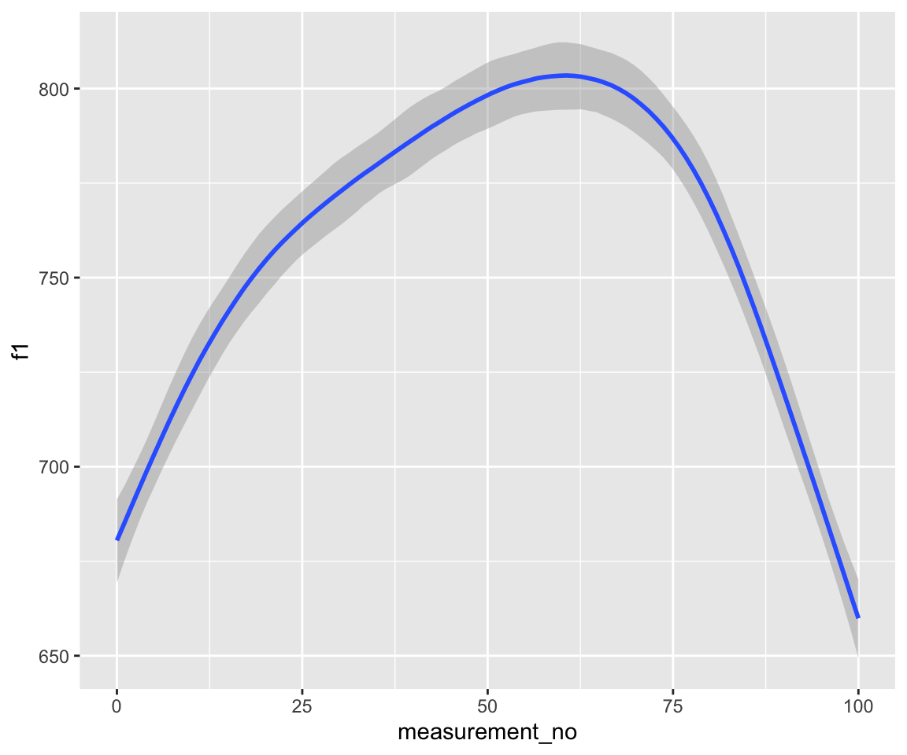
These look very similar.
The elegance of brms’ syntax (we basically just had to change bam() to brm()) hides larger differences between the two models under the hood.
Compare their model summaries:
GAM:
summary(s43_price_gam)
##
## Family: gaussian
## Link function: identity
##
## Formula:
## f1 ~ s(measurement_no, bs = "cr", k = 11)
##
## Parametric coefficients:
## Estimate Std. Error t value Pr(>|t|)
## (Intercept) 752.486 1.672 450.1 <2e-16 ***
## ---
## Signif. codes: 0 '***' 0.001 '**' 0.01 '*' 0.05 '.' 0.1 ' ' 1
##
## Approximate significance of smooth terms:
## edf Ref.df F p-value
## s(measurement_no) 6.439 7.763 101.7 <2e-16 ***
## ---
## Signif. codes: 0 '***' 0.001 '**' 0.01 '*' 0.05 '.' 0.1 ' ' 1
##
## R-sq.(adj) = 0.362 Deviance explained = 36.5%
## fREML = 7736.7 Scale est. = 3893.7 n = 1393Bayesian GAM:
summary(s43_price_m1)
## Family: gaussian
## Links: mu = identity; sigma = identity
## Formula: f1 ~ s(measurement_no, bs = "cr", k = 11)
## Data: s43_price (Number of observations: 1393)
## Draws: 4 chains, each with iter = 2500; warmup = 1250; thin = 1;
## total post-warmup draws = 5000
##
## Smoothing Spline Hyperparameters:
## Estimate Est.Error l-95% CI u-95% CI Rhat Bulk_ESS
## sds(smeasurement_no_1) 3.07 1.06 1.66 5.61 1.00 1010
## Tail_ESS
## sds(smeasurement_no_1) 1840
##
## Regression Coefficients:
## Estimate Est.Error l-95% CI u-95% CI Rhat Bulk_ESS Tail_ESS
## Intercept 752.49 1.68 749.23 755.73 1.00 5133 3488
## smeasurement_no_1 0.05 0.42 -0.76 0.87 1.00 4327 3330
##
## Further Distributional Parameters:
## Estimate Est.Error l-95% CI u-95% CI Rhat Bulk_ESS Tail_ESS
## sigma 62.44 1.20 60.16 64.87 1.00 5104 3289
##
## Draws were sampled using sampling(NUTS). For each parameter, Bulk_ESS
## and Tail_ESS are effective sample size measures, and Rhat is the potential
## scale reduction factor on split chains (at convergence, Rhat = 1).We know how to read a bam() model summary, but what should we do with this new one from brm()?
brm() shows different quantities, corresponding to a different way of representing smooths—it exploits the very cool equivalence between smooths and random effects, which allows a GAM to be fitted using machinery for fitting a mixed-effects model. This is well described in Mahr’s tutorial, and explained more succinctly in Franke’s chapter.
The model summary in brm() does not show estimated degrees of freedom like bam(), but a “standard deviation” parameter instead. Each smooth corresponds to one such parameter (in the model above, sds(smeasurement_no_1)), which is shown in the “Smoothing Spline Hyperparameters” block.
To understand this parameter, which we’ll call \(\sigma\), it’s important to know that bam() and brm() represent smooths differently. In bam(), the “smooth term” describes the entire curve, parametrized as a set of \(k\) basis functions. In contrast, brm() separates the basis functions into:
- A “linear”, or “fixed effect” component (= 1 basis function)
- A “wiggly” or “random effect” components (= \(k-1\) basis functions)
This is why there are two terms in the brm() output for measurement_no, compared to one in the bam() output. (We return to the linear component below.)
The higher the magnitude of the wiggly coefficients, the more wiggly the overall smooth. Since the standard deviation of the wiggly coefficients (\(\sigma\)) is basically an overall summary of their magnitude, \(\sigma\) tells us roughly the same information as the EDF parameter in bam().
If there is strong evidence that \(\sigma\) is different from 0, we can conclude that we are looking at a non-linear effect. Evaluating this is like evaluating whether a random-effect term is non-zero (covered in TODO): an approximate method is to examine the posterior of \(\sigma\) to see if the 95% CredI is away from 0. Let’s plot the posterior distribution of \(\sigma\):
mcmc_plot(s43_price_m1, variable="^sds", regex=TRUE, type="dens") + xlim(0,10)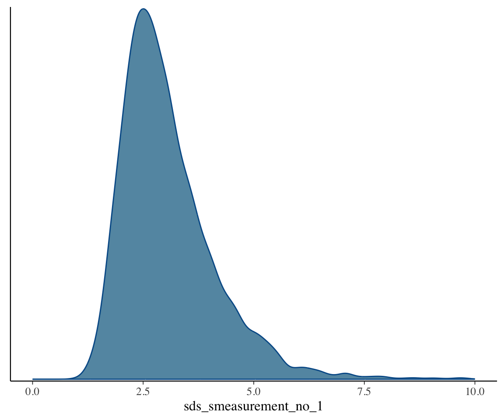
The bulk of the distribution is well above 0, suggesting that there is non-linearity here.
A more rigorous method would be a model comparison with a model containing a linear effect of measurement_no, using using PSIS-LOO or a Bayes Factor. The results should (intuitively) line up with the hypothesis test shown under “Approximate significance of smooth terms” in the s43_price_gam summary.
Exercise 14.2 Do this model comparison, using PSIS-LOO or a Bayes Factor.
Returning to the “fixed” or “linear” part of the smooth—smeasurement_no_1 in the model summary. This term is hard to interpret on its own. Conceptually, it should be the linear approximation to the curve, but in practice, this is only a rough equivalence because its estimate is tied up with the estimate of the “wiggly” part of the smooth (is my understanding). In model s43_price_m1, the linear term has a 95% CredI centered near 0, which makes sense given the empirical plot—a linear approximation would be (roughly) a flat line.
Seeing strong evidence that the coefficient for the linear part of a smooth is different from 0 would at least suggest that the relationship is not a flat line, but checking that rigorously would require a better method (e.g. comparison with an F1 ~ 1 model).
The upshot is that, like in GAMs, the actual parameters shown in the model summary corresponding to smooth terms are hard to interpret. It’s just a matter of whether there are two terms (brm()) or one (bam()) per smooth.
14.2.1 Priors for smooth terms
We’re supposed to think about priors when fitting Bayesian models. But because the model terms corresponding to smooths are unintuitive, it’s hard to define priors for them. For example, for smeasurement_no_1 (a.k.a. \(\sigma\)), which parametrizes “the wiggliness of the curve”, we probably want a prior like we’ve used for other “standard deviation parameters” (e.g. random-effect SDs) in Bayesian models (half-\(t\), half-Cauchy, or exponential), but what should the scale of this prior be?
A solution suggested here by GAMM guru Gavin Simpson is:
But you can pop a gaussian or t prior on the swt_1 term, for example, and another separate prior on the sds term, and then simulate from the prior distribution of the model (with prior_only = TRUE) and plot the prior draws using conditional_smooths() to see samples of smooths drawn from your prior. You should be looking at the amount of wigglines of the prior smooths to see if that about on average matches plausible range of wiggliness for the non-linear relationships you envisage based on your prior knowledge. You can also look at the values on the y axis to see if the implied effect sizes are reasonable given your prior expectations or not. Then you can adjust the priors you use until you effect sizes roughly in line with expectations and the same for the wigglinesses of the smooths implied by the prior.
That is: use prior predictive simulation!2
For example, in our case: the priors of the fitted model are:
s43_price_m1_priors <- prior_summary(s43_price_m1)
s43_price_m1_priors
## prior class coef group
## (flat) b
## (flat) b smeasurement_no_1
## student_t(3, 760, 63.8) Intercept
## student_t(3, 0, 63.8) sds
## student_t(3, 0, 63.8) sds s(measurement_no, bs = "cr", k = 11)
## student_t(3, 0, 63.8) sigma
## resp dpar nlpar lb ub source
## default
## (vectorized)
## default
## 0 default
## 0 (vectorized)
## 0 defaultThat is:
- The intercept (row 1) and linear component (row 2:
smeasurement_no_1) have flat priors, as is the default for fixed effects in brms. - The smooth component (coef =
s(measurement_no, bs = "cr", k = 11)) has a Student-\(t\) distribution with scale estimated from the SD of the data (here,measurement_no), which is the default for standard deviation terms in brms.
To do prior predictive simulation, we can’t have any flat priors, so we’ll change them to be reasonable based on domain knowledge. We’ll also change the prior for the smooth component to be even weaker. The logic is: since we don’t really understand what these parameters mean, we’ll first use very weak priors, then “rein them in” until our prior predictive simulation gives reasonable results.
As a first try:
- Reasonable values for the intercept are about 0-2000 Hz
- A large linear effect would be 10 (measurement_no ranges from 0-100, so that corresponds to a 1000 hz change)
- Keep the smooth component’s prior:
prior1 <- prior(normal(1000, 500), class = "Intercept") + prior(normal(0,10), class = b) + prior(student_t(3, 0, 63.8), class = sds)Prior predictive simulation with this prior:
s43_price_brm_nopost <- brm(s43_price_m1$formula,
data=s43_price_m1$data,
prior=prior1,
file = 'models/s43_price_brm_nopost',
sample_prior="only")
##
## SAMPLING FOR MODEL 'anon_model' NOW (CHAIN 1).
## Chain 1:
## Chain 1: Gradient evaluation took 4e-05 seconds
## Chain 1: 1000 transitions using 10 leapfrog steps per transition would take 0.4 seconds.
## Chain 1: Adjust your expectations accordingly!
## Chain 1:
## Chain 1:
## Chain 1: Iteration: 1 / 2000 [ 0%] (Warmup)
## Chain 1: Iteration: 200 / 2000 [ 10%] (Warmup)
## Chain 1: Iteration: 400 / 2000 [ 20%] (Warmup)
## Chain 1: Iteration: 600 / 2000 [ 30%] (Warmup)
## Chain 1: Iteration: 800 / 2000 [ 40%] (Warmup)
## Chain 1: Iteration: 1000 / 2000 [ 50%] (Warmup)
## Chain 1: Iteration: 1001 / 2000 [ 50%] (Sampling)
## Chain 1: Iteration: 1200 / 2000 [ 60%] (Sampling)
## Chain 1: Iteration: 1400 / 2000 [ 70%] (Sampling)
## Chain 1: Iteration: 1600 / 2000 [ 80%] (Sampling)
## Chain 1: Iteration: 1800 / 2000 [ 90%] (Sampling)
## Chain 1: Iteration: 2000 / 2000 [100%] (Sampling)
## Chain 1:
## Chain 1: Elapsed Time: 0.024 seconds (Warm-up)
## Chain 1: 0.013 seconds (Sampling)
## Chain 1: 0.037 seconds (Total)
## Chain 1:
##
## SAMPLING FOR MODEL 'anon_model' NOW (CHAIN 2).
## Chain 2:
## Chain 2: Gradient evaluation took 2e-06 seconds
## Chain 2: 1000 transitions using 10 leapfrog steps per transition would take 0.02 seconds.
## Chain 2: Adjust your expectations accordingly!
## Chain 2:
## Chain 2:
## Chain 2: Iteration: 1 / 2000 [ 0%] (Warmup)
## Chain 2: Iteration: 200 / 2000 [ 10%] (Warmup)
## Chain 2: Iteration: 400 / 2000 [ 20%] (Warmup)
## Chain 2: Iteration: 600 / 2000 [ 30%] (Warmup)
## Chain 2: Iteration: 800 / 2000 [ 40%] (Warmup)
## Chain 2: Iteration: 1000 / 2000 [ 50%] (Warmup)
## Chain 2: Iteration: 1001 / 2000 [ 50%] (Sampling)
## Chain 2: Iteration: 1200 / 2000 [ 60%] (Sampling)
## Chain 2: Iteration: 1400 / 2000 [ 70%] (Sampling)
## Chain 2: Iteration: 1600 / 2000 [ 80%] (Sampling)
## Chain 2: Iteration: 1800 / 2000 [ 90%] (Sampling)
## Chain 2: Iteration: 2000 / 2000 [100%] (Sampling)
## Chain 2:
## Chain 2: Elapsed Time: 0.026 seconds (Warm-up)
## Chain 2: 0.012 seconds (Sampling)
## Chain 2: 0.038 seconds (Total)
## Chain 2:
##
## SAMPLING FOR MODEL 'anon_model' NOW (CHAIN 3).
## Chain 3:
## Chain 3: Gradient evaluation took 1e-06 seconds
## Chain 3: 1000 transitions using 10 leapfrog steps per transition would take 0.01 seconds.
## Chain 3: Adjust your expectations accordingly!
## Chain 3:
## Chain 3:
## Chain 3: Iteration: 1 / 2000 [ 0%] (Warmup)
## Chain 3: Iteration: 200 / 2000 [ 10%] (Warmup)
## Chain 3: Iteration: 400 / 2000 [ 20%] (Warmup)
## Chain 3: Iteration: 600 / 2000 [ 30%] (Warmup)
## Chain 3: Iteration: 800 / 2000 [ 40%] (Warmup)
## Chain 3: Iteration: 1000 / 2000 [ 50%] (Warmup)
## Chain 3: Iteration: 1001 / 2000 [ 50%] (Sampling)
## Chain 3: Iteration: 1200 / 2000 [ 60%] (Sampling)
## Chain 3: Iteration: 1400 / 2000 [ 70%] (Sampling)
## Chain 3: Iteration: 1600 / 2000 [ 80%] (Sampling)
## Chain 3: Iteration: 1800 / 2000 [ 90%] (Sampling)
## Chain 3: Iteration: 2000 / 2000 [100%] (Sampling)
## Chain 3:
## Chain 3: Elapsed Time: 0.029 seconds (Warm-up)
## Chain 3: 0.012 seconds (Sampling)
## Chain 3: 0.041 seconds (Total)
## Chain 3:
##
## SAMPLING FOR MODEL 'anon_model' NOW (CHAIN 4).
## Chain 4:
## Chain 4: Gradient evaluation took 1e-06 seconds
## Chain 4: 1000 transitions using 10 leapfrog steps per transition would take 0.01 seconds.
## Chain 4: Adjust your expectations accordingly!
## Chain 4:
## Chain 4:
## Chain 4: Iteration: 1 / 2000 [ 0%] (Warmup)
## Chain 4: Iteration: 200 / 2000 [ 10%] (Warmup)
## Chain 4: Iteration: 400 / 2000 [ 20%] (Warmup)
## Chain 4: Iteration: 600 / 2000 [ 30%] (Warmup)
## Chain 4: Iteration: 800 / 2000 [ 40%] (Warmup)
## Chain 4: Iteration: 1000 / 2000 [ 50%] (Warmup)
## Chain 4: Iteration: 1001 / 2000 [ 50%] (Sampling)
## Chain 4: Iteration: 1200 / 2000 [ 60%] (Sampling)
## Chain 4: Iteration: 1400 / 2000 [ 70%] (Sampling)
## Chain 4: Iteration: 1600 / 2000 [ 80%] (Sampling)
## Chain 4: Iteration: 1800 / 2000 [ 90%] (Sampling)
## Chain 4: Iteration: 2000 / 2000 [100%] (Sampling)
## Chain 4:
## Chain 4: Elapsed Time: 0.023 seconds (Warm-up)
## Chain 4: 0.012 seconds (Sampling)
## Chain 4: 0.035 seconds (Total)
## Chain 4:
## Examine just the smooth
conditional_smooths(s43_price_brm_nopost, spaghetti=T, ndraws=20)
## Examine the predicted F1 ~ measuerment_no curves
s43 %>%
data_grid(measurement_no = seq_range(measurement_no, n = 100)) %>%
add_epred_draws(s43_price_brm_nopost, ndraws = 100) %>%
ggplot(aes(x = measurement_no, y = F1)) +
geom_line(aes(y = .epred, group = .draw), alpha = .1) 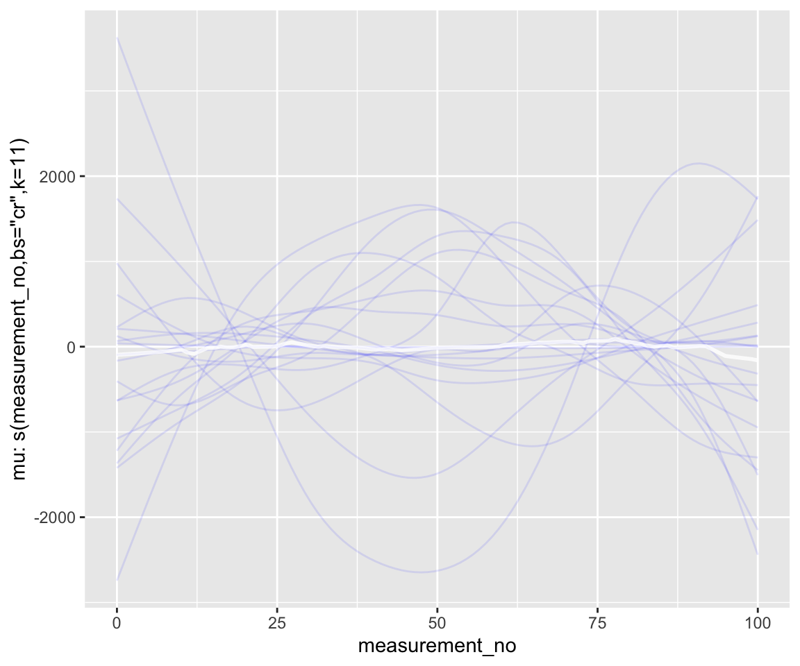
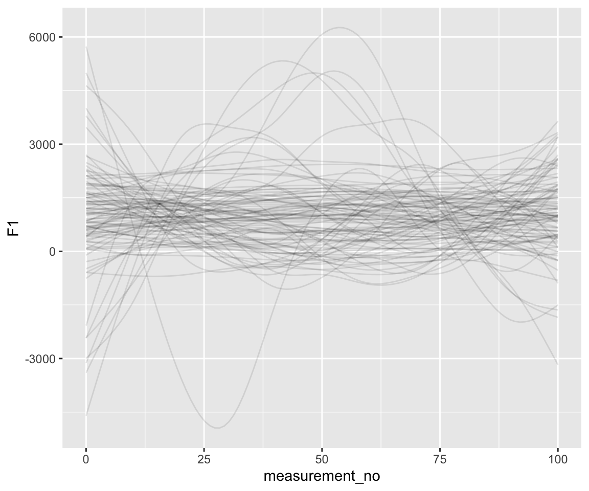
Note the scale of the \(y\)-axis—way too large.
Let’s try a more restrictive prior on the smooth term:
prior2 <- prior(normal(1000, 500), class = "Intercept") + prior(normal(0,10), class = b) + prior(student_t(3, 0, 20), class = sds)s43_price_brm_nopost_2 <- brm(s43_price_m1$formula,
data=s43_price_m1$data,
prior=prior2,
file = 'models/s43_price_brm_nopost_2',
sample_prior="only")
## Compiling Stan program...
## Start sampling
##
## SAMPLING FOR MODEL 'anon_model' NOW (CHAIN 1).
## Chain 1:
## Chain 1: Gradient evaluation took 3.6e-05 seconds
## Chain 1: 1000 transitions using 10 leapfrog steps per transition would take 0.36 seconds.
## Chain 1: Adjust your expectations accordingly!
## Chain 1:
## Chain 1:
## Chain 1: Iteration: 1 / 2000 [ 0%] (Warmup)
## Chain 1: Iteration: 200 / 2000 [ 10%] (Warmup)
## Chain 1: Iteration: 400 / 2000 [ 20%] (Warmup)
## Chain 1: Iteration: 600 / 2000 [ 30%] (Warmup)
## Chain 1: Iteration: 800 / 2000 [ 40%] (Warmup)
## Chain 1: Iteration: 1000 / 2000 [ 50%] (Warmup)
## Chain 1: Iteration: 1001 / 2000 [ 50%] (Sampling)
## Chain 1: Iteration: 1200 / 2000 [ 60%] (Sampling)
## Chain 1: Iteration: 1400 / 2000 [ 70%] (Sampling)
## Chain 1: Iteration: 1600 / 2000 [ 80%] (Sampling)
## Chain 1: Iteration: 1800 / 2000 [ 90%] (Sampling)
## Chain 1: Iteration: 2000 / 2000 [100%] (Sampling)
## Chain 1:
## Chain 1: Elapsed Time: 0.026 seconds (Warm-up)
## Chain 1: 0.013 seconds (Sampling)
## Chain 1: 0.039 seconds (Total)
## Chain 1:
##
## SAMPLING FOR MODEL 'anon_model' NOW (CHAIN 2).
## Chain 2:
## Chain 2: Gradient evaluation took 1e-06 seconds
## Chain 2: 1000 transitions using 10 leapfrog steps per transition would take 0.01 seconds.
## Chain 2: Adjust your expectations accordingly!
## Chain 2:
## Chain 2:
## Chain 2: Iteration: 1 / 2000 [ 0%] (Warmup)
## Chain 2: Iteration: 200 / 2000 [ 10%] (Warmup)
## Chain 2: Iteration: 400 / 2000 [ 20%] (Warmup)
## Chain 2: Iteration: 600 / 2000 [ 30%] (Warmup)
## Chain 2: Iteration: 800 / 2000 [ 40%] (Warmup)
## Chain 2: Iteration: 1000 / 2000 [ 50%] (Warmup)
## Chain 2: Iteration: 1001 / 2000 [ 50%] (Sampling)
## Chain 2: Iteration: 1200 / 2000 [ 60%] (Sampling)
## Chain 2: Iteration: 1400 / 2000 [ 70%] (Sampling)
## Chain 2: Iteration: 1600 / 2000 [ 80%] (Sampling)
## Chain 2: Iteration: 1800 / 2000 [ 90%] (Sampling)
## Chain 2: Iteration: 2000 / 2000 [100%] (Sampling)
## Chain 2:
## Chain 2: Elapsed Time: 0.028 seconds (Warm-up)
## Chain 2: 0.013 seconds (Sampling)
## Chain 2: 0.041 seconds (Total)
## Chain 2:
##
## SAMPLING FOR MODEL 'anon_model' NOW (CHAIN 3).
## Chain 3:
## Chain 3: Gradient evaluation took 2e-06 seconds
## Chain 3: 1000 transitions using 10 leapfrog steps per transition would take 0.02 seconds.
## Chain 3: Adjust your expectations accordingly!
## Chain 3:
## Chain 3:
## Chain 3: Iteration: 1 / 2000 [ 0%] (Warmup)
## Chain 3: Iteration: 200 / 2000 [ 10%] (Warmup)
## Chain 3: Iteration: 400 / 2000 [ 20%] (Warmup)
## Chain 3: Iteration: 600 / 2000 [ 30%] (Warmup)
## Chain 3: Iteration: 800 / 2000 [ 40%] (Warmup)
## Chain 3: Iteration: 1000 / 2000 [ 50%] (Warmup)
## Chain 3: Iteration: 1001 / 2000 [ 50%] (Sampling)
## Chain 3: Iteration: 1200 / 2000 [ 60%] (Sampling)
## Chain 3: Iteration: 1400 / 2000 [ 70%] (Sampling)
## Chain 3: Iteration: 1600 / 2000 [ 80%] (Sampling)
## Chain 3: Iteration: 1800 / 2000 [ 90%] (Sampling)
## Chain 3: Iteration: 2000 / 2000 [100%] (Sampling)
## Chain 3:
## Chain 3: Elapsed Time: 0.026 seconds (Warm-up)
## Chain 3: 0.014 seconds (Sampling)
## Chain 3: 0.04 seconds (Total)
## Chain 3:
##
## SAMPLING FOR MODEL 'anon_model' NOW (CHAIN 4).
## Chain 4:
## Chain 4: Gradient evaluation took 4e-06 seconds
## Chain 4: 1000 transitions using 10 leapfrog steps per transition would take 0.04 seconds.
## Chain 4: Adjust your expectations accordingly!
## Chain 4:
## Chain 4:
## Chain 4: Iteration: 1 / 2000 [ 0%] (Warmup)
## Chain 4: Iteration: 200 / 2000 [ 10%] (Warmup)
## Chain 4: Iteration: 400 / 2000 [ 20%] (Warmup)
## Chain 4: Iteration: 600 / 2000 [ 30%] (Warmup)
## Chain 4: Iteration: 800 / 2000 [ 40%] (Warmup)
## Chain 4: Iteration: 1000 / 2000 [ 50%] (Warmup)
## Chain 4: Iteration: 1001 / 2000 [ 50%] (Sampling)
## Chain 4: Iteration: 1200 / 2000 [ 60%] (Sampling)
## Chain 4: Iteration: 1400 / 2000 [ 70%] (Sampling)
## Chain 4: Iteration: 1600 / 2000 [ 80%] (Sampling)
## Chain 4: Iteration: 1800 / 2000 [ 90%] (Sampling)
## Chain 4: Iteration: 2000 / 2000 [100%] (Sampling)
## Chain 4:
## Chain 4: Elapsed Time: 0.028 seconds (Warm-up)
## Chain 4: 0.014 seconds (Sampling)
## Chain 4: 0.042 seconds (Total)
## Chain 4:
conditional_smooths(s43_price_brm_nopost_2, spaghetti=T, ndraws=20)
s43 %>%
data_grid(measurement_no = seq_range(measurement_no, n = 100)) %>%
add_epred_draws(s43_price_brm_nopost_2, ndraws = 20) %>%
ggplot(aes(x = measurement_no, y = F1)) +
geom_line(aes(y = .epred, group = .draw), alpha = .1) 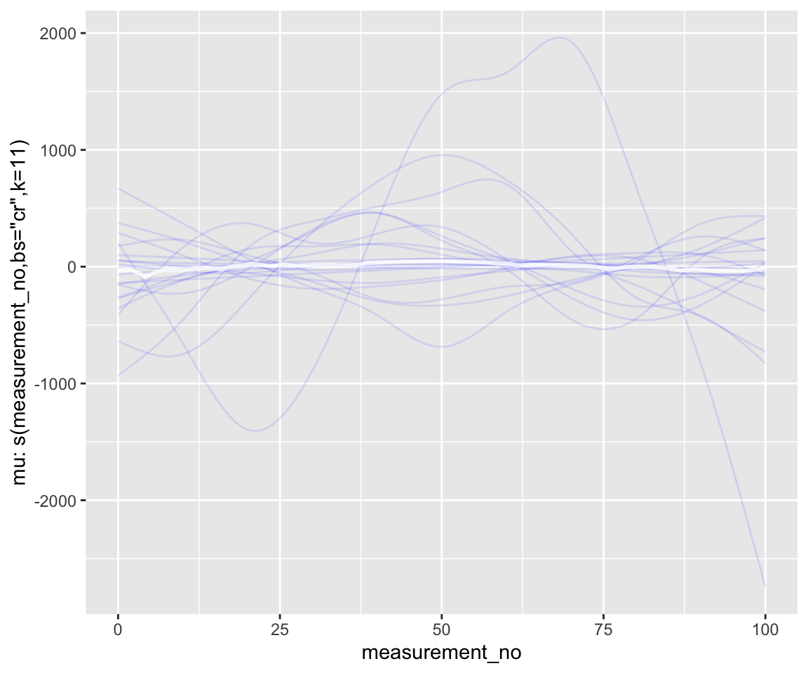
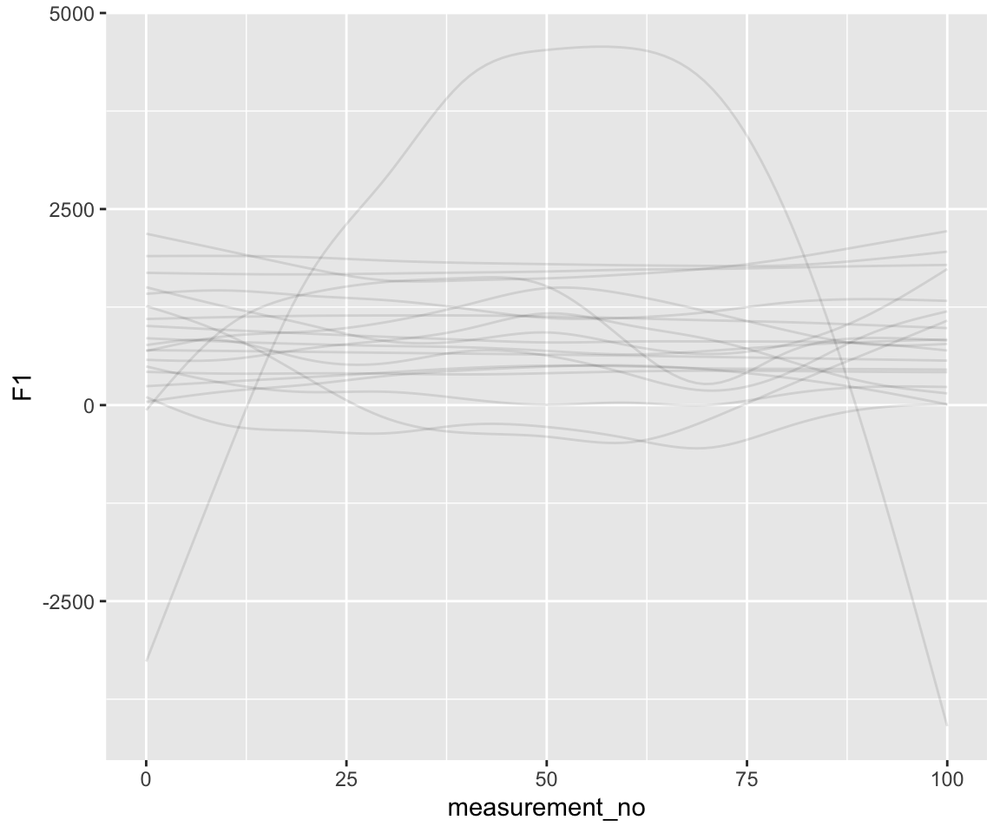
Notice the difference in scale along the \(y\)-axis. There is a comparable amount of wiggliness here relative to what we know F1 curves in the real world look like—though perhaps we’d like to put an even stronger prior on wiggliness.
This still isn’t a great prior, but hopefully we’ve shown what the process of using posterior predictive simulation to refine the prior would look like—even when the actual model parameters for the smooths are difficult to interpret.
14.3 Autoregression terms
What if we wanted to control for correlations within trajectories? It’s easy – and, actually, brms is much more flexible in how we do it. We can finally test the question of whether we need an AR1 or an AR2 model:
s43_price_brm_ar1 <- brm(f1 ~ s(measurement_no, bs="cr", k=11) + ar(p=1, gr=id),
data=s43_price, control=list(adapt_delta=0.99),
file = 'models/s43_price_brm_ar1',
cores=4, chains = 4)
s43_price_brm_ar2 <- brm(f1 ~ s(measurement_no, bs="cr", k=11) + ar(p=2, gr=id),
data=s43_price, control=list(adapt_delta=0.99),
file = 'models/s43_price_brm_ar2',
cores=4, chains = 4)Model summaries:
summary(s43_price_brm_ar1)
## Family: gaussian
## Links: mu = identity; sigma = identity
## Formula: f1 ~ s(measurement_no, bs = "cr", k = 11) + ar(p = 1, gr = id)
## Data: s43_price (Number of observations: 1393)
## Draws: 4 chains, each with iter = 2000; warmup = 1000; thin = 1;
## total post-warmup draws = 4000
##
## Smoothing Spline Hyperparameters:
## Estimate Est.Error l-95% CI u-95% CI Rhat Bulk_ESS
## sds(smeasurement_no_1) 2.69 0.85 1.54 4.81 1.00 1138
## Tail_ESS
## sds(smeasurement_no_1) 1662
##
## Correlation Structures:
## Estimate Est.Error l-95% CI u-95% CI Rhat Bulk_ESS Tail_ESS
## ar[1] 0.65 0.02 0.60 0.69 1.00 4817 2899
##
## Regression Coefficients:
## Estimate Est.Error l-95% CI u-95% CI Rhat Bulk_ESS Tail_ESS
## Intercept 753.02 3.33 746.56 759.71 1.00 4445 2245
## smeasurement_no_1 0.07 0.60 -1.10 1.25 1.00 4125 3073
##
## Further Distributional Parameters:
## Estimate Est.Error l-95% CI u-95% CI Rhat Bulk_ESS Tail_ESS
## sigma 50.80 0.97 48.96 52.77 1.00 4562 2711
##
## Draws were sampled using sampling(NUTS). For each parameter, Bulk_ESS
## and Tail_ESS are effective sample size measures, and Rhat is the potential
## scale reduction factor on split chains (at convergence, Rhat = 1).
summary(s43_price_brm_ar2)
## Family: gaussian
## Links: mu = identity; sigma = identity
## Formula: f1 ~ s(measurement_no, bs = "cr", k = 11) + ar(p = 2, gr = id)
## Data: s43_price (Number of observations: 1393)
## Draws: 4 chains, each with iter = 2000; warmup = 1000; thin = 1;
## total post-warmup draws = 4000
##
## Smoothing Spline Hyperparameters:
## Estimate Est.Error l-95% CI u-95% CI Rhat Bulk_ESS
## sds(smeasurement_no_1) 2.76 0.90 1.54 4.93 1.00 884
## Tail_ESS
## sds(smeasurement_no_1) 1399
##
## Correlation Structures:
## Estimate Est.Error l-95% CI u-95% CI Rhat Bulk_ESS Tail_ESS
## ar[1] 0.61 0.03 0.55 0.66 1.00 3477 3082
## ar[2] 0.08 0.03 0.01 0.14 1.00 3366 2763
##
## Regression Coefficients:
## Estimate Est.Error l-95% CI u-95% CI Rhat Bulk_ESS Tail_ESS
## Intercept 753.10 3.47 746.18 759.84 1.00 4274 3044
## smeasurement_no_1 0.07 0.59 -1.09 1.26 1.00 3420 2942
##
## Further Distributional Parameters:
## Estimate Est.Error l-95% CI u-95% CI Rhat Bulk_ESS Tail_ESS
## sigma 50.74 0.95 48.99 52.67 1.00 4019 2918
##
## Draws were sampled using sampling(NUTS). For each parameter, Bulk_ESS
## and Tail_ESS are effective sample size measures, and Rhat is the potential
## scale reduction factor on split chains (at convergence, Rhat = 1).conditional_effects(s43_price_m1) %>%
plot()
conditional_effects(s43_price_brm_ar1) %>%
plot()
conditional_effects(s43_price_brm_ar2) %>%
plot()
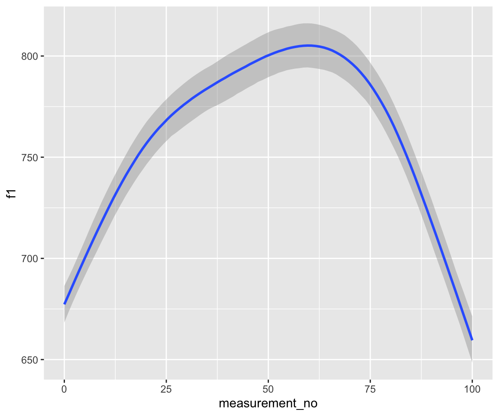
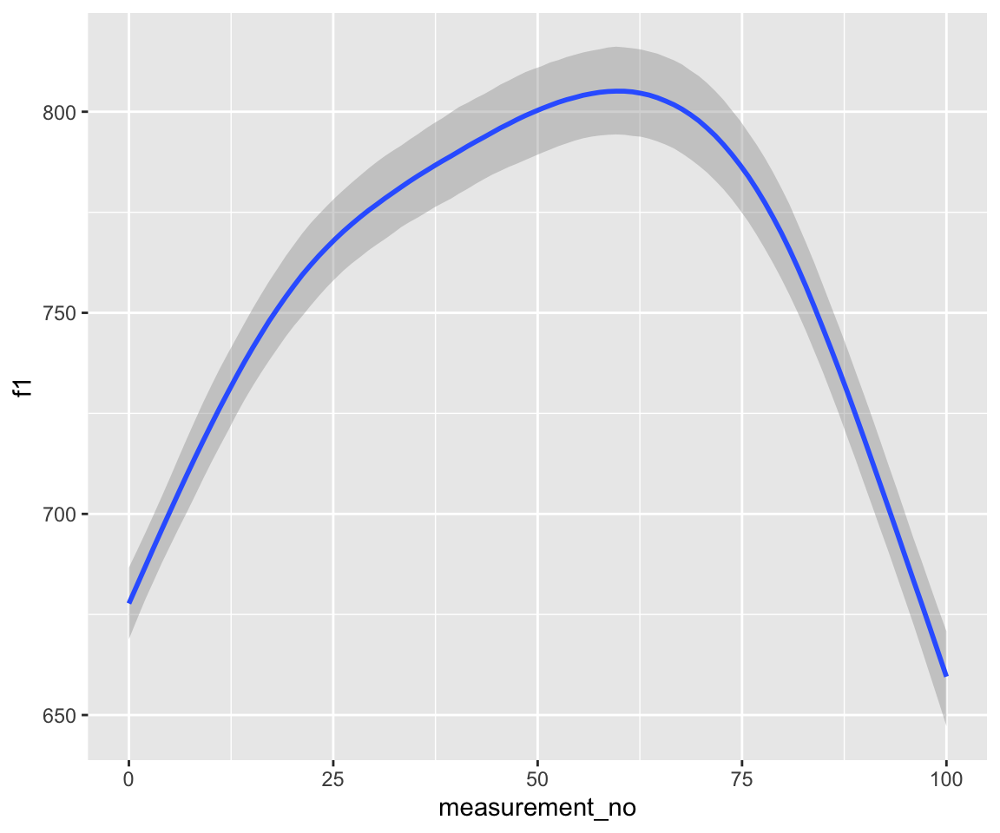
Note that these models handle autocorrelation much more rigorously than those fitted with bam(), since the rho component(s), i.e., ar[1] at lag 1 and ar[2] at lag 2, are estimated directly from the data at the same time as the model.
We can also use model comparison to actually test “is it important to account for autocorrelation?” and “if so, is an AR1 correlation structure sufficient?”
Exercise 14.3
Examine the model prediction plots just above. What effect has incorporating AR1 structure had on model predictions? AR2 structure?
Use model comparison (via PSIS-LOO), with the three last models fitted above, to test: “is it important to account for autocorrelation?” and “if so, is an AR1 correlation structure sufficient?”
Determine a
rhovalue for ourbam()model,s43_price_gam. How does it compare to the 95% CredI of this parameter ins43_price_brm_ar1?
15 A Bayesian model with a difference term
Let us now add a difference term that captures the difference between PRICE and MOUTH.
s43$vowel_o <- as.ordered(s43$vowel)
contrasts(s43$vowel_o) <- "contr.treatment"
## takes a few minutes to fit on my laptop - Morgan
s43_price_brm_diff <- brm(f1 ~ vowel_o +
s(measurement_no, bs="cr", k=11) +
s(measurement_no, bs="cr", k=11, by=vowel_o) +
ar(p=1, gr=id),
data=s43, control=list(adapt_delta=0.99),
file = 'models/s43_price_brm_diff',
cores=4, chains = 4)
summary(s43_price_brm_diff)
## Family: gaussian
## Links: mu = identity; sigma = identity
## Formula: f1 ~ vowel_o + s(measurement_no, bs = "cr", k = 11) + s(measurement_no, bs = "cr", k = 11, by = vowel_o) + ar(p = 1, gr = id)
## Data: s43 (Number of observations: 2516)
## Draws: 4 chains, each with iter = 2000; warmup = 1000; thin = 1;
## total post-warmup draws = 4000
##
## Smoothing Spline Hyperparameters:
## Estimate Est.Error l-95% CI u-95% CI Rhat
## sds(smeasurement_no_1) 2.15 0.66 1.29 3.79 1.00
## sds(smeasurement_novowel_oprice_1) 1.04 0.61 0.18 2.50 1.00
## Bulk_ESS Tail_ESS
## sds(smeasurement_no_1) 1152 1692
## sds(smeasurement_novowel_oprice_1) 1028 959
##
## Correlation Structures:
## Estimate Est.Error l-95% CI u-95% CI Rhat Bulk_ESS Tail_ESS
## ar[1] 0.74 0.02 0.70 0.77 1.00 5077 2844
##
## Regression Coefficients:
## Estimate Est.Error l-95% CI u-95% CI Rhat
## Intercept 742.54 4.47 733.94 751.28 1.00
## vowel_oprice 10.65 5.95 -1.20 22.19 1.00
## smeasurement_no_1 -4.81 0.73 -6.24 -3.37 1.00
## smeasurement_no:vowel_oprice_1 4.76 0.97 2.89 6.72 1.00
## Bulk_ESS Tail_ESS
## Intercept 3384 3003
## vowel_oprice 3509 2758
## smeasurement_no_1 2322 2635
## smeasurement_no:vowel_oprice_1 2305 2200
##
## Further Distributional Parameters:
## Estimate Est.Error l-95% CI u-95% CI Rhat Bulk_ESS Tail_ESS
## sigma 50.58 0.72 49.17 52.02 1.00 5178 2909
##
## Draws were sampled using sampling(NUTS). For each parameter, Bulk_ESS
## and Tail_ESS are effective sample size measures, and Rhat is the potential
## scale reduction factor on split chains (at convergence, Rhat = 1).conditional_effects(s43_price_brm_diff) %>%
plot()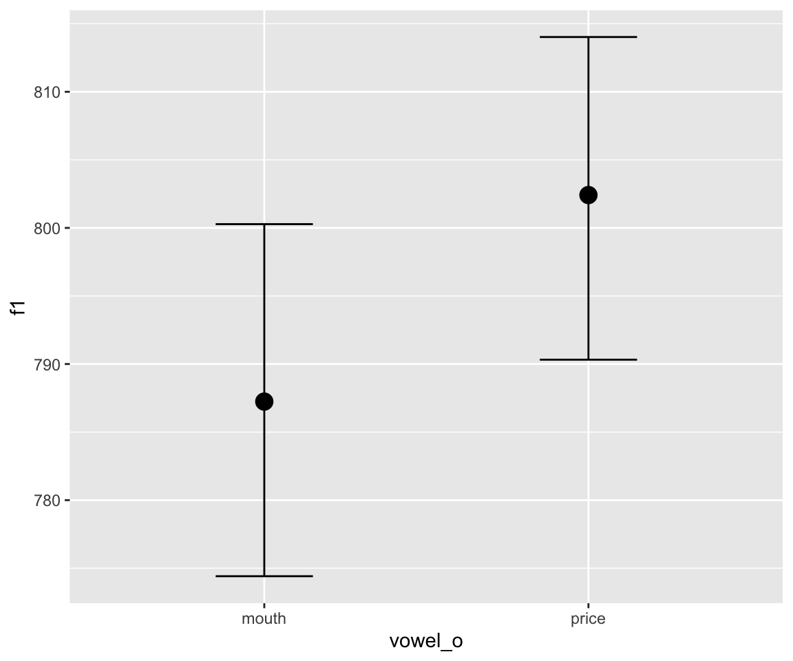
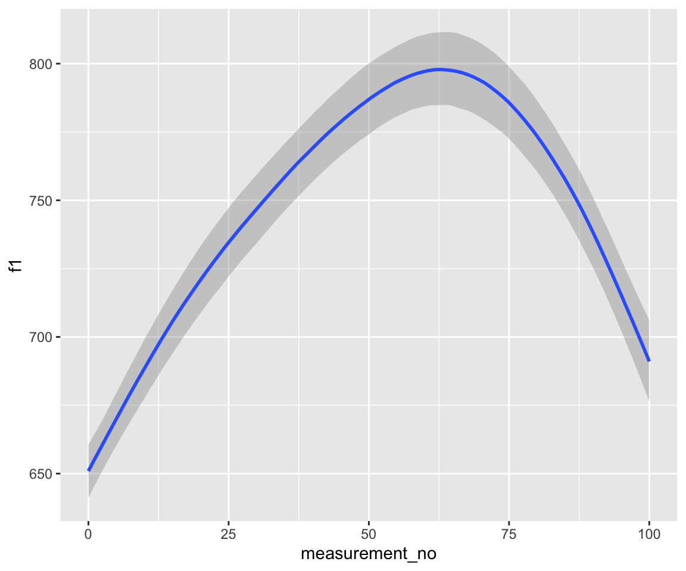
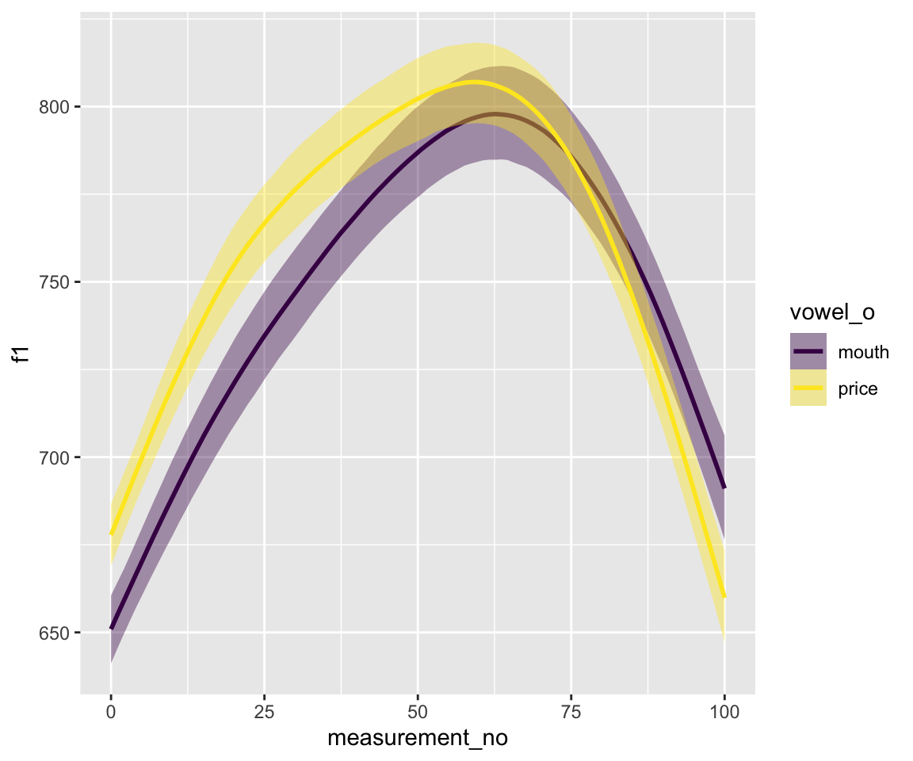
The output of the model looks reassuring, but it’s hard to interpret the summary. Is there a lot of evidence for a difference between the two curves? Let us plot the relevant parts of the posterior distribution.
mcmc_plot(s43_price_brm_diff, variable="^sds", regex=TRUE, type="dens") + xlim(0,7)
## Scale for x is already present.
## Adding another scale for x, which will replace the existing scale.
mcmc_plot(s43_price_brm_diff, variable="bs_smeasurement", regex=TRUE, type="dens")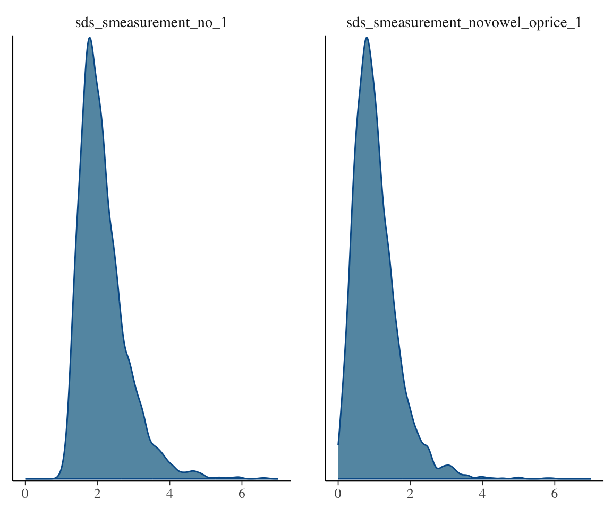
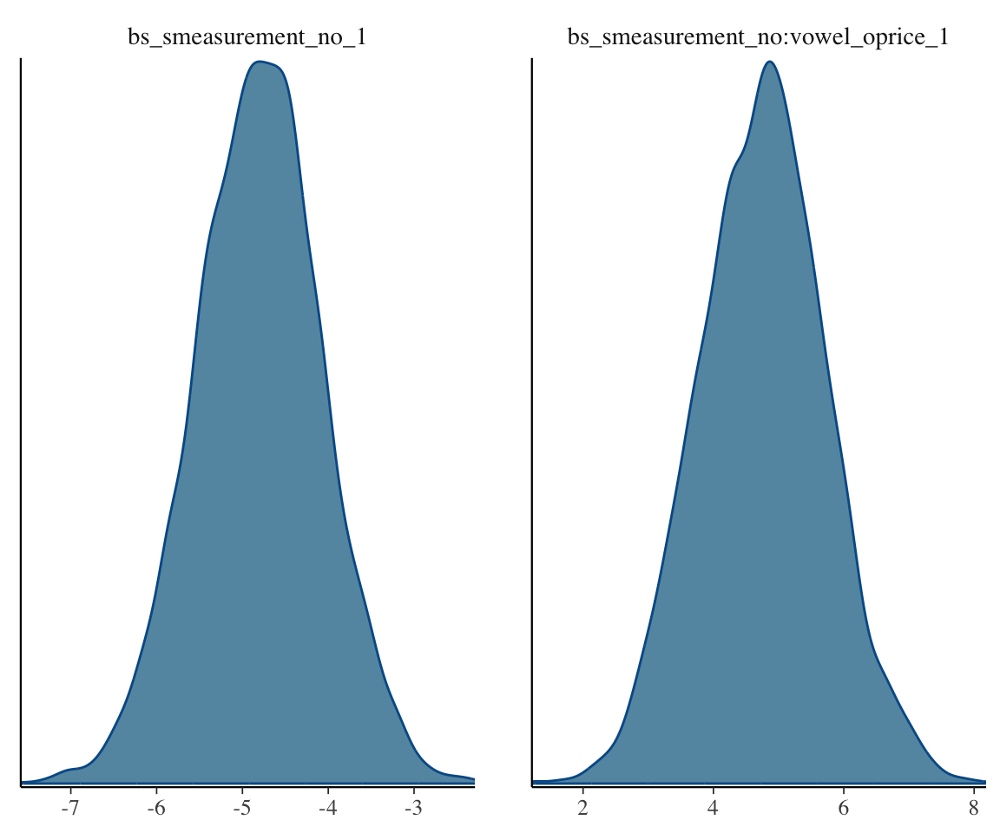
It would look like there’s definitely some evidence for a difference, though the smooth SD term in particular doesn’t look that convincingly different from 0.
To assess whether there is a PRICE/MOUTH difference, we could do a model comparison:
## model without difference in curve by vowel, beyond overall height
s43_price_brm_diff_2 <- brm(f1 ~ vowel_o +
s(measurement_no, bs="cr", k=11) +
ar(p=1, gr=id),
data=s43, control=list(adapt_delta=0.99),
file = 'models/s43_price_brm_diff_2',
cores=4, chains = 4)
## model without any difference by vowel
s43_price_brm_diff_3 <- brm(f1 ~
s(measurement_no, bs="cr", k=11) +
ar(p=1, gr=id),
data=s43, control=list(adapt_delta=0.99),
file = 'models/s43_price_brm_diff_3',
cores=4, chains = 4)s43_price_brm_diff <- add_criterion(s43_price_brm_diff, criterion = 'loo')
s43_price_brm_diff_2 <- add_criterion(s43_price_brm_diff_2, criterion = 'loo')
s43_price_brm_diff_3 <- add_criterion(s43_price_brm_diff_3, criterion = 'loo')
loo_compare(s43_price_brm_diff, s43_price_brm_diff_2, s43_price_brm_diff_3)
## elpd_diff se_diff
## s43_price_brm_diff 0.0 0.0
## s43_price_brm_diff_2 -12.6 6.6
## s43_price_brm_diff_3 -13.7 9.7Exercise 15.1 Interpret this model comparison to answer the research question (for speaker 43).
16 Model interpretation
An advantage of a Bayesian GAM is flexibility of model interpretation. We can now compute any quantities we want from the posterior, rather than being restricted to difference smooths, etc.
As a simple example, we can make spaghetti plots showing uncertainty in trajectory shape—which goes beyond what we’re able to show just by looking at 95% CIs/CredIs. This can be done just using the spaghetti flag of conditional_effects():
conditional_effects(s43_price_brm_diff, spaghetti = TRUE, ndraws = 25)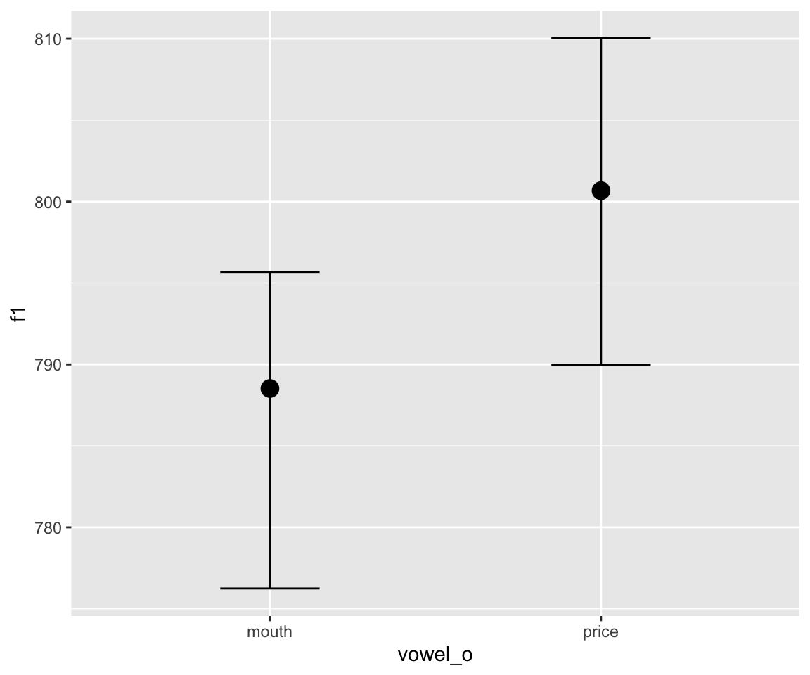
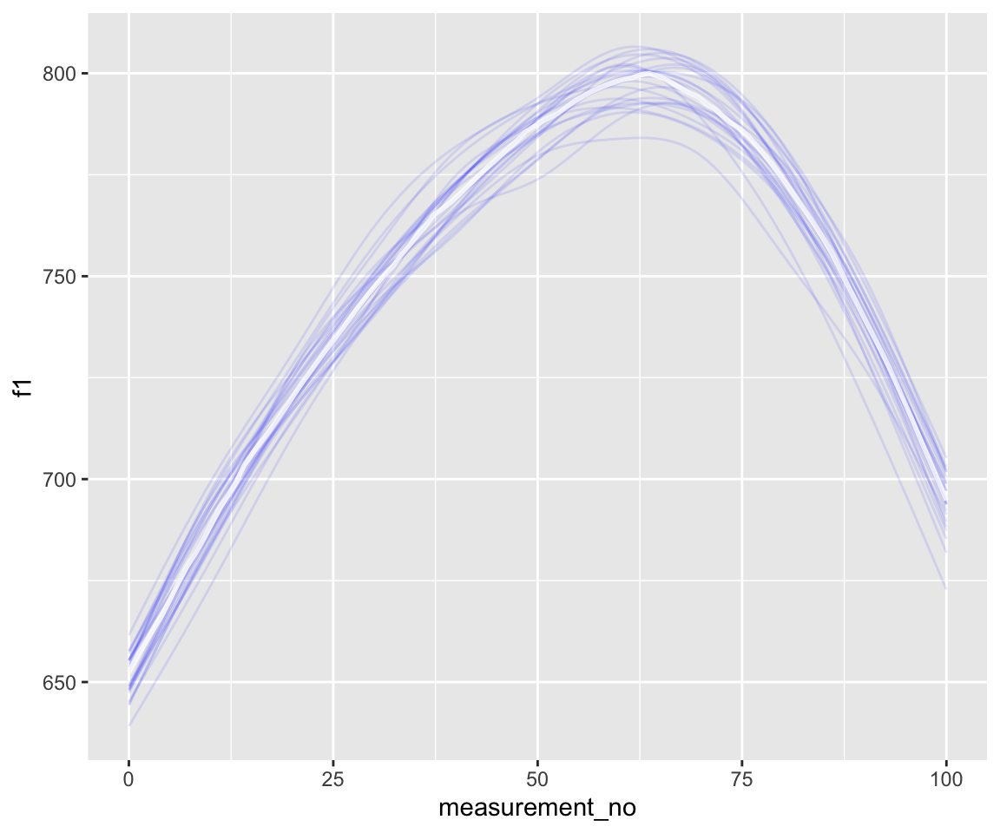
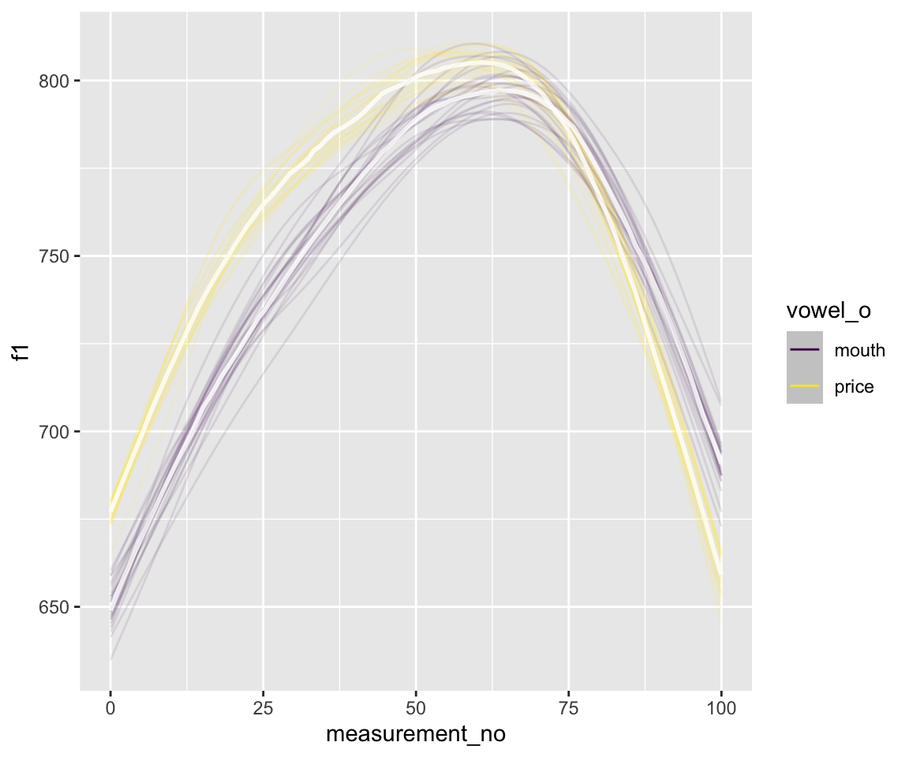
As a more involved example: we might want to examine summary statistics of the modeled trajectories, like maximum F1, to examine whether this differs between vowel = MOUTH and PRICE.
We can do this by:
- Making the calculations for a spaghetti plot like the one above, but for 500 spaghetti strands, using
conditional_effects() - Extract the 500 trajectories per vowel
- For each trajectory, find the maximum F1, giving 500 values of
F1_max_mouthandF1_max_price, as well asF1_max_diff(the difference between them)—which can be thought of as samples from the posteriors of these three quantities.
Exercise 16.1
Implement this, and use the results to calculate the 95% CredI of
F1_max_diff.Use a similar procedure to calculate
F1_location_diff: the posterior of the difference in location of the F1 max (= difference inmeasurement_no) between MOUTH and PRICE.
16.1 Real data
To fit a model to a real dataset, with multiple speakers, we have to reckon with the fact (I think) that that you can’t include “random intercepts” or “factor smooths” in a brms GAMM. From here:
Unfortunately, you cannot use splines as “random” or “varying” effects, because the penalized splines from mgcv which brms relies on are already implemented as a varying effect.
So if you want a smooth term that is at the same time a “random” effect, you need to work directly with non-penalized splines. That’s IMHO usually not a big deal, since you rarely want to allow the per-individual spline to be very complex (you can’t learn them reliably anyway), so a low-degree-of-freedom spline should work just well. So something like:y ~ Treatment + s(t, by = Treatment) + (1 + bs(t, df = 2)|individual) Could be sensible. (this requires the splines package. You may also want to use ns but I would expect the results to be quite comparable)
The model below attempts to use this tip to fit a Bayesian version of our GAMM for the full pm_young dataset (all speakers), from Week 7:
price_bin_gam_rsmooth <- bam(f2 ~ age_o +
s(measurement_no, bs="cr", k=11) +
s(measurement_no, bs="cr", k=11, by=age_o) +
s(measurement_no, speaker_f, bs="fs", m=1, k=11),
data=price_bin,
AR.start=traj_start, rho=rho_est)It takes a very long time to fit the following model: (Don’t run this code! It takes 1-2 hours on my laptop)
pm_young$vowel_o <- as.ordered(pm_young$vowel)
contrasts(pm_young$vowel_o) <- "contr.treatment"
pm_young$speaker_f <-factor(pm_young$speaker)
prior2 <- prior(normal(1000, 500), class = "Intercept") + prior(normal(0,10), class = b) + prior(student_t(3, 0, 20), class = sds)
price_all_m2 <- brm(f1 ~ vowel_o +
s(measurement_no, bs="cr", k=11) +
s(measurement_no, bs="cr", k=11, by=vowel_o) +
+ (1 + bs(measurement_no, df = 2)*vowel_o | speaker_f ) +
ar(p=1, gr=id),
prior = prior2,
data=pm_young,
file = 'models/price_all_m2',
cores=4, chains = 4)Also useful, and online: these slides by Simon Wood.↩︎
I’d add to this advice: examine the predicted trajectories, if that is more intuitive. However,
conditional_smooths()is clever about things like removing the effect of autocorrelation terms, so it may be a good idea to stick with it unless you’re sure your predicted trajectories are correct.↩︎